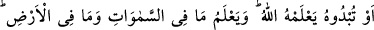
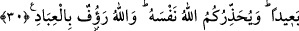

KÂFİRLERİ DOST EDİNMEYİN
28. Mü’minler, mü’minleri bırakıp da kâfirleri dost edinmesin. Kim bunu yaparsa,
artık onun Allah nezdinde hiçbir değeri yoktur. Ancak kâfirlerden gelebilecek bir
tehlikeden sakınmanız başkadır. Allah, kendisine karşı (gelmekten) sizi
sakındırıyor. Dönüş yalnız Allah’adır.
29. De ki: İçinizdekileri gizleseniz de açığa vursanız da Allah onu bilir. Göklerde
ve yerde olanları da bilir. Allah her şeye kadirdir.
30. Herkesin, iyilik olarak yaptıklarını da kötülük olarak yaptıklarını da
karşısında hazır bulduğu günde, (insan) isteyecek ki kötülükleri ile kendisi
arasında uzun bir mesâfe bulunsun. Allah, kendisine karşı (gelmekten) sizi
sakındırıyor. Allah kullarına çok şefkatlidir.
“Mü’minler, mü’minleri bırakıp kâfirleri dost edinmesinler.”
Mü’minler; akrabalık, câhiliyye devrinden dostluk ve komşuluk gibi sebeplerle
kâfirleri dost edinmekten kâfirlerden savaş ve dînî konularda yardım istemekten men
edilmişlerdir. Ta ki bu sâyede mü’minlerin sevgileri ve nefretleri Allah için olsun.
Müslümanlar dostluğun ve düşmanlığın Allah için olacağını hiçbir zaman
unutmamalıdırlar.
Mü’minleri bırakıp, kâfirlerle dostluk; ister bir müslüman için tek başına bir dostluk
olsun, isterse başkalarıyla müştereken kurdukları bir dostluk olsun, yasaklanmıştır. Bu
âyet işaret ediyor ki, müslümanların dostluğuna lâyık bulunanlar ancak müslümanlardır.
Müslümanlarla dostluk kâfirlerin dostluğuna muhtaç bırakmaz. Bu nedenle kâfirleri
mü’minlere tercîh edemezler.
“Kim bunu yaparsa Allah’dan ona hiçbir şey yoktur.” Yani onları dost edinen kimse
“dostluk” kelimesiyle ifade edilebilecek ne varsa Allah’dan bir nasibi yoktur. Doğrudan
doğruya Allah’ın dostluğundan uzak kalmıştır. Bu, mantıkî olarak da böyledir: Bir dost
ile, o dostun düşmanını dost bilmek çelişkidir. Bu sebeple bir şâir şöyle demiştir: